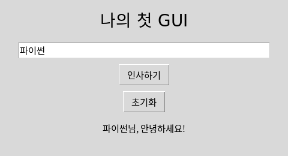
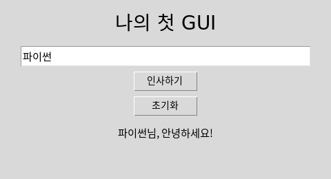
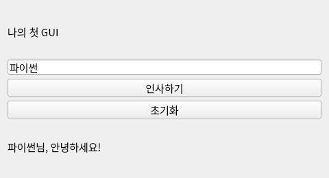
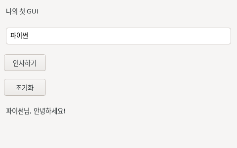
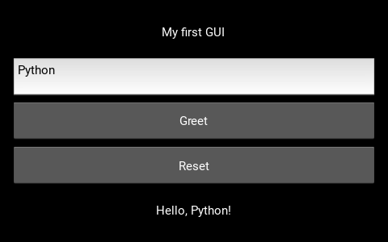

tkinter
기본 위젯 · 간단한 도구
Tcl/Tk 8.6UNIT 02 / LEARN BY DOING
tkinter로 시작하고 PySide6로 확장하는 데스크톱 앱 실습.
사용자가 어떤 행동으로 프로그램에 의도를 전달하나요?
UI는 사람과 시스템이 상호 작용하는 접점입니다. 화면의 버튼·입력창·메뉴뿐 아니라 색상·글꼴·배치·피드백도 사용 편의성에 영향을 줍니다. 같은 기능이라도 저장 버튼을 찾기 어렵다면 사용자는 실수하기 쉽습니다.
CLI는 명령어 입력 방식입니다. 반복 작업 자동화와 정확한 명령 전달에 유용하지만 문법을 배워야 합니다. GUI는 아이콘·메뉴·버튼 같은 시각 요소를 조작합니다. NUI는 음성·손짓·터치 등 자연스러운 행동을 사용합니다. 터치 GUI처럼 분류가 겹치는 사례도 있습니다.
생각 열기: 파일 100개 이름을 바꾸는 일과 사진 한 장을 자르는 일에 각각 어떤 인터페이스를 선택할까요? 편리함은 사용자 경험과 작업 목적에 따라 달라집니다. 44쪽 탐구의 dir 입력은 CLI, 아이콘 클릭은 GUI, 손짓으로 TV 조작은 NUI입니다.
같은 인사 앱을 여섯 가지 방식으로 비교하세요.
교과서의 tkinter, PyQt, wxPython, Kivy에 PySide6와 ttk를 보강했습니다. tkinter는 Tcl/Tk 연결이며 파이썬 배포에 흔히 포함됩니다. 다만 일부 Linux 환경은 python3-tk를 별도 설치해야 합니다. ttk는 Tk의 테마 위젯입니다.
PySide6와 PyQt6는 Qt 6를 파이썬에서 사용하는 서로 다른 바인딩입니다. 이 과정의 추가 실습은 Qt 공식 바인딩인 PySide6의 Qt Widgets를 사용합니다. 두 라이브러리의 외형은 같은 Qt 스타일을 쓰면 비슷하며 화면만으로 구분하기 어렵습니다.
wxPython은 wxWidgets 기반으로 운영체제의 위젯을 활용합니다. Kivy는 자체 그리기 방식으로 터치와 여러 플랫폼의 인터페이스를 구성합니다. 배포 대상·필요 위젯·학습 자료·환경 지원을 기준으로 선택하세요.
갤러리의 화면은 제공하는 코드를 실행한 캡처입니다. OS와 테마에 따라 외형은 달라집니다. PyQt와 PySide는 배포 조건이 다르므로 실제 배포 전 각 공식 라이선스 안내를 확인하는 습관을 갖습니다.
좀 더 알아보기: IDLE은 tkinter를 사용하는 실제 파이썬 프로그램입니다. IDLE의 메뉴·버튼·입력창이 어떤 위젯으로 구성될지 관찰하세요. 라이브러리를 선택한 이유는 기능과 사용자를 함께 근거로 적으세요.
보여줄 정보와 받을 입력에 따라 위젯을 선택합니다.
Tk 객체는 기본 창입니다. Label은 표시, Button은 명령, Entry는 한 줄 입력, Text는 여러 줄 입력입니다. Checkbutton은 독립적인 선택, Radiobutton은 묶음 중 하나의 선택, Listbox는 목록 선택입니다. Canvas는 도형·이미지 그리기 공간이며 Frame은 위젯을 묶는 컨테이너입니다.
위젯을 생성한 것만으로 배치가 완료되지는 않습니다. 부모 창이나 Frame을 지정하고 배치 관리자를 호출해야 합니다. BooleanVar·StringVar 같은 변수를 통해 체크 상태와 선택 값을 읽을 수 있습니다.
PySide6에서는 QApplication이 앱 실행을 관리하고 QWidget이 창·컨테이너 역할을 합니다. Label→QLabel, Button→QPushButton, Entry→QLineEdit, Text→QPlainTextEdit, Checkbutton→QCheckBox, Radiobutton→QRadioButton, Listbox→QListWidget으로 개념을 연결합니다. Canvas는 일대일 대응이 아니며 여기서는 QGraphicsScene/View로 도형을 그립니다.
창을 늘렸을 때도 사용하기 좋은 화면을 만드세요.
pack은 순서와 방향으로 배치하고, grid는 행·열로 배치하며, place는 좌표나 상대 위치를 지정합니다. 고정 좌표는 창 크기·글꼴 변화에 취약하므로 폼에는 grid, 순차 영역에는 pack부터 검토하세요.
pack(expand=True, fill="both")에서 expand는 여유 공간 배분, fill은 배정 영역 안에서 위젯을 늘리는 방향입니다. grid의 sticky="ew"와 columnconfigure(weight=1)는 가로 확장에 사용합니다. 같은 부모 안에서 pack과 grid를 혼용하지 마세요. 다른 Frame 안에서는 각각 사용할 수 있습니다.
Qt의 QVBoxLayout·QHBoxLayout·QGridLayout은 자식 위젯의 크기와 배치를 관리합니다. QWidget에 레이아웃을 설정하고 addWidget 또는 addLayout으로 구성합니다. tkinter 코드를 단어만 바꾸는 대신 배치 의도를 옮기세요.
버튼 생성 시점과 클릭 시점은 다릅니다.
콜백은 나중에 호출할 함수입니다. command=greet는 함수 자체를 전달합니다. command=greet()는 지금 함수를 실행하고 반환값을 전달하므로 의도와 다릅니다. 인자가 필요하면 lambda: greet(name)처럼 호출을 감쌉니다.
tkinter의 mainloop는 이벤트 루프입니다. PySide6에서는 clicked.connect(greet)로 버튼의 시그널과 함수를 연결하고 app.exec()로 이벤트 루프를 시작합니다. connect(greet())도 같은 이유로 잘못된 사용입니다.
입력 변화는 tkinter의 bind나 변수 추적, PySide6의 textChanged 같은 시그널로 다룰 수 있습니다. GUI 이벤트 안에서 긴 반복·time.sleep을 실행하면 화면 반응이 늦어집니다. 주기 작업에는 after 또는 QTimer를 사용하고 긴 작업 분리는 심화 주제로 다룹니다.
열기와 저장을 만드는 동안 1단원의 import와 함수가 다시 등장합니다.
① tkinter와 filedialog를 임포트합니다. ② Tk()로 창을 만들고 title로 제목을 정합니다. ③ Text(window, wrap="word")를 생성하고 pack(expand=True, fill="both")로 창을 채웁니다.
④ 열기 함수: askopenfilename → 취소 여부 확인 → UTF-8로 읽기 → delete("1.0", END)로 기존 내용 제거 → insert로 새 내용 삽입입니다. "1.0"은 첫 줄 0번째 문자입니다.
⑤ 저장 함수: asksaveasfilename(defaultextension=".txt") → 취소 확인 → Text.get으로 읽기 → UTF-8 파일 쓰기입니다. 교과서의 END는 Text가 유지하는 마지막 개행까지 포함합니다. 추가 개행을 제외하려면 "end-1c"를 사용합니다.
⑥ Menu에 열기·저장·종료를 연결합니다. ⑦ mainloop()로 이벤트를 기다립니다. ⑧ 전체 코드를 실행하고 한글 파일 저장→재열기를 시험합니다. 교과서 55쪽 탐구의 라이브러리 이름은 tkinter입니다.
PySide6 비교: QMainWindow의 중앙에 QPlainTextEdit를 두고 QAction을 메뉴에 연결합니다. QFileDialog는 (경로, 선택 필터)를 반환하므로 path, _로 받습니다. setPlainText/toPlainText가 텍스트 넣기·읽기 역할입니다.
확장 완성 예제에는 글자 수, Ctrl+O/Ctrl+S, 다른 이름으로 저장, 창 닫기 시 미저장 확인, UTF-8 읽기·쓰기 실패 안내가 들어 있습니다. 저장 대화 상자를 취소하면 닫기도 취소되도록 반환값을 연결했습니다. 기본 메모장과 비교하며 한 기능씩 옮기세요.
기본 위젯으로 익힌 개념을 Qt Widgets로 옮깁니다.
PC의 프로젝트 폴더에서 python -m venv .venv를 실행합니다. Windows PowerShell은 .venv\Scripts\Activate.ps1, macOS/Linux는 source .venv/bin/activate로 활성화합니다. 이후 python -m pip install PySide6로 설치하고 python main.py로 실행합니다. VS Code에서 같은 .venv 인터프리터를 선택하세요.
첫 예제는 함수 기반으로 QApplication → QWidget → 레이아웃 → 위젯 → connect → show → exec 순서를 익힙니다. 메모장은 QMainWindow를 상속하는 클래스로 상태와 메서드를 묶습니다. self.editor는 여러 메서드에서 같은 입력창을 사용하게 합니다.
Qt Designer는 pyside6-designer로 실행합니다. Widget 폼에 라벨·입력창·버튼을 배치하고 레이아웃을 적용한 다음 form.ui로 저장하세요. pyside6-uic form.ui -o ui_form.py로 Python 코드를 생성할 수 있습니다.
생성 파일은 다시 생성하면 덮어써집니다. 직접 작성하는 main.py에서 Ui_Form을 가져와 setupUi(window)를 호출하고 이벤트를 연결하세요. 버튼의 objectName을 확인해야 코드에서 올바른 이름으로 접근할 수 있습니다. Qt Quick/QML은 별도 UI 기술이며 이번 기본 실습은 Qt Widgets입니다.
1단원의 패키지에 화면을 연결하여 앱을 완성합니다.
같은 core.logic을 tkinter와 PySide6에서 임포트합니다. 각 GUI는 입력값을 읽어 함수에 전달하고 결과를 표시합니다. core에는 tkinter·PySide6 코드가 없으므로 웹에서도 기능을 검사할 수 있습니다.
기본 완성 조건: 위젯 배치, 버튼 이벤트, 모듈 분리, 잘못된 입력 안내입니다. 확장 과제: 추첨 인원 입력, 결과 기록, 설명 문구 개선 중 하나를 선택하세요. 두 버전 모두 실행하고 같은 입력의 의미가 유지되는지 비교합니다.
운영 계획의 수행①은 기능·이벤트 10점, 모듈 구조·코드 품질 5점, 저널 5점입니다. 이 사이트의 체크·연습 점수는 공식 성적이 아닙니다. PySide6 학습은 확장 경로이며 별도 평가 조건을 추가하지 않습니다.
수행평가에서는 교사가 명시적으로 허용하지 않은 AI 도움 없이 스스로 작성해야 합니다. 저널에는 구현 내용, 오류, 해결 근거를 기록하고 코드와 함께 제출하세요.
어떤 위젯을 왜 배치했고, 어떤 이벤트에 반응하는지 설명하세요.
중단원 정리: Tk 객체가 창을 만들고, 위젯이 입력·표시 기능을 맡고, 배치 관리자가 위치를 정하며, 이벤트 함수가 사용자 행동에 반응합니다. mainloop가 이벤트를 기다립니다.
57쪽 확인학습의 IDLE 코드에서 컨테이너는 Frame, 클릭 요소는 Button, 이 요소들의 통칭은 위젯입니다. 종합 평가에서는 Tk 객체, UI 편의성, UI 정의, GUI 사례, 버튼 콜백, 배치 방식, pack 호출을 모두 확인합니다.
교과서 58쪽 4번의 "사용자 정의 예외" 표현은 보기 내용과 맞지 않습니다. 웹에서는 아이콘 클릭 사례의 인터페이스 유형을 판단하는 문제로 명확히 적었습니다.
CODE WORKSPACE
실행 엔진은 처음 실행할 때 내려받습니다. 네트워크가 필요합니다. 실행은 최대 15초이며 중지 후 다시 실행할 수 있습니다.
실행할 예제를 선택하세요.
SAME TASK, DIFFERENT TOOLKITS
모두 이름 입력·인사·초기화 기능을 갖춘 앱입니다. Linux 가상 디스플레이에서 제공 소스를 실행해 캡처했습니다. OS·테마에 따라 외형은 달라집니다. Kivy 예제는 기본 글꼴에서도 보이도록 영어 문구를 사용합니다.

기본 위젯 · 간단한 도구
Tcl/Tk 8.6
테마 위젯 · tkinter 확장
Tcl/Tk 8.6
Qt 공식 바인딩 · Qt Widgets
6.11.2 / Qt 6.11.2
Qt 바인딩 · 풍부한 위젯
6.11.0 / Qt 6.11.2
OS 위젯 · 데스크톱 도구
4.2.3 / wxWidgets 3.2
자체 렌더링 · 터치 UI
2.3.1위젯 도감·레이아웃·메모장·생활 도우미까지 같은 개념을 대응하여 볼 수 있습니다. 실제 수정과 파일 다운로드는 실습실에서 진행하세요.
INTERACTIVE GUI CONCEPTS
학습용 웹 시뮬레이션입니다. 아래 조작은 정해진 예제의 동작을 재현하며, 편집한 Python 코드를 실행하지 않습니다. 실제 tkinter·PySide6 창은 프로젝트를 내려받아 PC에서 실행하세요.
이름을 입력하세요.
이벤트를 기다립니다.
창 너비를 바꿔 배치 변화를 확인하세요.
0자 · 0줄
PRACTICE / RETRY / UNDERSTAND
실행 검사는 결과와 입력 조건을 확인합니다. 빈칸은 대표 답안과 비교하며, 다른 표현은 해설을 보고 판단하세요. GUI 코드는 PC 실행 점검까지 마치세요.
LEARNING JOURNAL
코드·풀이·저널은 이 브라우저에 저장됩니다. 다른 PC에서는 기록 파일을 불러오세요. 공용 PC에서는 내보낸 뒤 기록을 지우세요. 서버로 제출되거나 공식 성적으로 처리되지 않습니다.